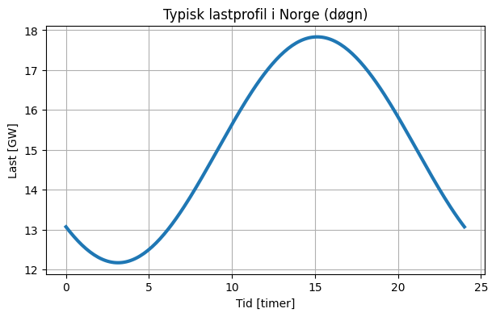
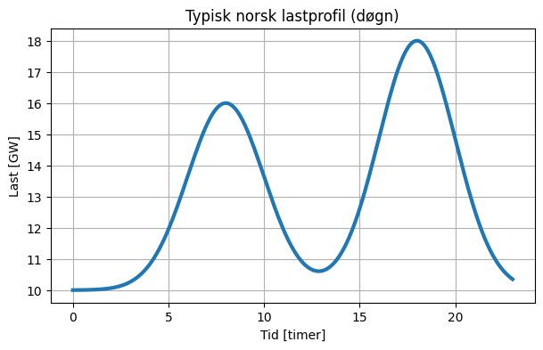

Tallgrunnlag (Norge)#
Vi ser på:
Lastnivå
Produksjon
Variasjon over tid
⚡ 🇳🇴 Nøkkeltall for kraftsystemet (2025)#
Variabel |
Verdi |
|---|---|
🔋 Produksjon |
ca. 161.8–162 TWh |
⚡ Forbruk |
ca. 138–139 TWh |
📈 Kraftoverskudd |
ca. 22–23 TWh |
🌊 Andel vannkraft |
~90 % |
🌬️ Andel vindkraft |
~8–9 % |
☀️ Andel sol |
~0.2 % |
🪫 Fossil / termisk |
~1 % |
Typisk døgnprofil (Norge)#
import numpy as np
import matplotlib.pyplot as plt
t = np.linspace(0, 24, 200)
load = 15 + 5*np.sin(2*np.pi*(t-7)/24) + 3*np.sin(2*np.pi*(t-17)/24)
plt.figure(figsize=(7,4))
plt.plot(t, load, linewidth=3)
plt.xlabel("Tid [timer]")
plt.ylabel("Last [GW]")
plt.title("Typisk lastprofil i Norge (døgn)")
plt.grid(True)
plt.show()

t = np.linspace(0, 23, 200)
morning_peak = 6 * np.exp(-0.5*((t-8)/2)**2)
evening_peak = 8 * np.exp(-0.5*((t-18)/2)**2)
base_load = 10
load = base_load + morning_peak + evening_peak
plt.figure(figsize=(7,4))
plt.plot(t, load, linewidth=3)
plt.xlabel("Tid [timer]")
plt.ylabel("Last [GW]")
plt.title("Typisk norsk lastprofil (døgn)")
plt.grid(True)
plt.show()

Hva ser vi?#
Morgenpeak rundt kl. 08
Kveldspeak rundt kl. 18
Lav last om natten